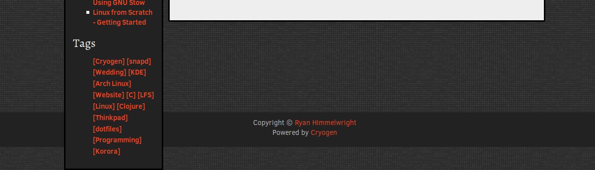
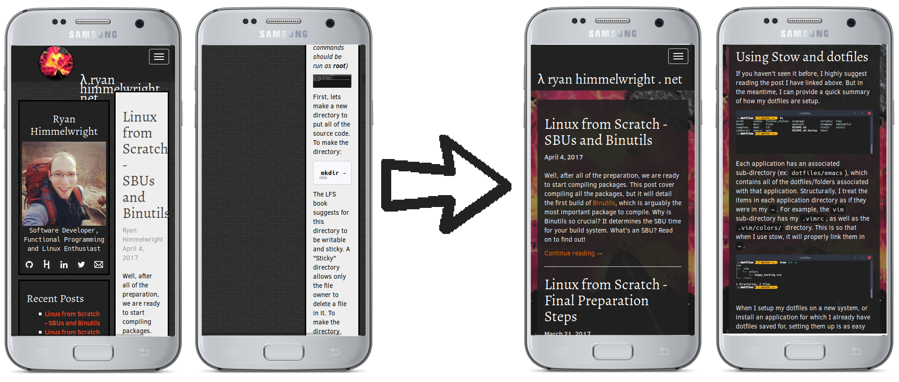

New Website Theme: Immutable
When I first started using Cryogen to generate this website, I wanted to create a personalized theme. This desire led me to hack a the default theme into a mutant, which I boringly named "ryan1" (I anticipated it to be temporary). It looked like a relic, designed from when I first learned how to make a web page... the early 2000's. Like many all websites from that time, it was not mobile friendly. I hope to change all of that, by introducing my new website theme: Immutable.


While it may possibly still look dated (I wouldn't know, I'm a backend dev), it addresses several of the issues I had with the ryan1 theme. Here are a few examples of these improvements:
Removed the Sidebar & Dispersed Its Contents
{kind=link}
I have to be honest here... I originally planned on keeping the side bar when I started to build the theme. I liked how it held all of my links (Github, LinkedIn, etc), recent posts, and tags in one, easy to find, location. I also liked having my avatar picture in the side bar. I felt it made the site more personable (or maybe I'm just egotistical). After working on the base of the theme however, I realized the site might be better off without it. I've relocated the items to other locations of the site. The majority of the links have been relocated to the drop-down menu (more on that below), and I at least added my picture to the About Page.
I might reinstate a sidebar in the future, but only if it looks good and I can add it correctly. The way I implemented the old sidebar caused many of the issues prompting this new theme, and I do not want to bring back those problems.
Removed the Bad Footer
{kind=link}
One of the issues created by the sidebar and my poor css floats, was the footer. On pages with a large enough the main content, it looked fine, consisting of a dark gray bar along the bottom of the page . However, when viewing a page with a small content section, such as the About page, the footer would rise up behind the sidebar. It looked terrible.
{kind=link}
In the Immutable theme, I have fixed the footer and removed the gray bar. The background looks great, and the text is clearly visible over it, making the bar no longer required. I like minimal footers. I only need a small copyright statement, and I enjoy having a Cryogen shout-out here. So that's all I have.
Mobile Support
{kind=link}
The biggest reason for making the new theme was that viewing the website on a mobile device was a poor experience... unusable even. Again, because I implemented the sidebar poorly, it always remained on the side. Even on a narrow mobile screen. There was not enough room for the actual main content section, and pages/posts consisted of a skinny line of text down the side of the phone. Images... well, don't get me started on how well images were displayed. Immutable solves these issues. The main content window takes up the majority of the screen, allowing for easy content reading.
Mobile Navigation

In addition to better viewing, site navigation has also been improved on mobile. When I say improved, I of course mean added, as is was sort-of non-existent before. In ryan1 there was an drop-down menu icon, but when it was tapped... nothing happened. At all. Now, there is an icon that drops down a site navigation menu when tapped. At the bottom of the navigation items, there is a more tab. When clicked, it extends the menu to also include my contact links (Github, LinkedIn, etc.), recent posts, and the list of post tag links.
Continued Work
While its name is immutable, the actual theme itself is not (bad joke). There are a few things I plan on tweaking over time. For example, I don't love the fonts and spacing and I will continue to improve them. I also want to edit thecode colors. I did a quick edit of the colors so that they worked with the theme, but they not what I ultimately want. I use the code segments a lot on this site, so it is important that they look nice.Well, that is it. I finally got around to making a new theme, and plan to make it even better over time. I hope you enjoy, even on a phone ;).